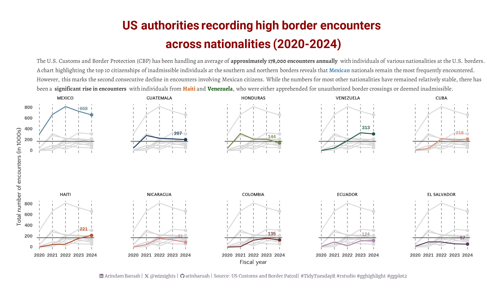

library(tidyverse)
library(stringr)
library(glue)
library(ggrepel)
library(ggplot2)
library(ggtext)
library(sysfonts)
library(showtext)
library(ggbump)
library(gghighlight)
library(MetBrewer)Introduction
This edition highlights the annual number of border encounters handled by U.S. Customs and Border Protection (CBP), exploring the intriguing demographic trends revealed by the data. The key focus of the visualisation was to use the “gghighlight” package, which allowed me to compare the trends of every country in each facet panel as a greyed-out line.
Libraries used
The list of R packages used for creating this visualisation 👇
Sourcing the data
The dataset is obtained from the TidyTuesday repository.
cbp_resp <- readr::read_csv('https://raw.githubusercontent.com/rfordatascience/tidytuesday/master/data/2024/2024-11-26/cbp_resp.csv')
cbp_state <- readr::read_csv('https://raw.githubusercontent.com/rfordatascience/tidytuesday/master/data/2024/2024-11-26/cbp_state.csv')Setting the plot aesthetics
# caption handles
swd <- str_glue("#SWDchallenge: June 2024 • Source: Synthetic data from ChatGPT<br>")
li <- str_glue("<span style='font-family:fa6-brands'></span>")
gh <- str_glue("<span style='font-family:fa6-brands'></span>")
mn <- str_glue("<span style='font-family:fa6-brands'></span>")
tt <- str_glue("#TidyTuesdayR: November 2024 • Source: US Customs and Border Protection (CBP) <br>")
# plot colors
bkg_col <- colorspace::lighten("white", 0.05)
title_col <- "#3d3d3d"
subtitle_col <- "#3d3d3d"
caption_col <- "#72647D"
text_col <- colorspace::darken("gray40" , 0.2)
# fonts
font_add('fa6-brands','fontawesome/otfs/Font Awesome 6 Brands-Regular-400.otf')
font_add_google("Roboto", regular.wt = 400, family = "title")
font_add_google("Alegreya", regular.wt = 400, family = "subtitle")
font_add_google("Quattrocento Sans", regular.wt = 400, family = "text")
font_add_google("Merriweather", regular.wt = 400,family = "caption")
showtext_auto(enable = TRUE)
# Plot texts
title_text <- "<span style='color:darkred'>US authorities recording high border encounters <br> across nationalities (2020-2024)</span>"
subtitle_text <- "The U.S. Customs and Border Protection (CBP) has been handling an average of approximately 178,000 encounters per month with individuals of <br> various nationalities at the U.S. borders. A chart highlighting the top 10 citizenships of inadmissible individuals at the southern and northern <br> borders reveals that <span style='color:steelblue'>Mexican</span> nationals remain the most frequently encountered. However, this marks the second consecutive decline in encounters <br> involving Mexican citizens. While the numbers for most other nationalities have remained relatively stable, there has been a <strong> significant rise in <br> encounters </strong> with individuals from <span style='color:#cc5200'><strong>Haiti</strong></span> and <span style='color:#004d00'><strong>Venezuela</strong></span>, who were either apprehended for unauthorized border crossings or deemed inadmissible. "
X_icon <- glue("<span style='font-family:fa6-brands'></span>")
caption_text <- str_glue("{li} Arindam Baruah | {X_icon} @wizsights | {gh} arinbaruah | Source: US Customs and Border Patrol| #TidyTuesdayR #rstudio #gghighlight #ggplot2")
theme_set(theme_minimal(base_size = 15, base_family = "text"))
# Theme updates
theme_update(
plot.title.position = "plot",
plot.caption.position = "plot",
legend.position = 'plot',
plot.margin = margin(t = 10, r = 15, b = 0, l = 15),
plot.background = element_rect(fill = bkg_col, color = bkg_col),
panel.background = element_rect(fill = bkg_col, color = bkg_col),
axis.title.x = element_text(margin = margin(10, 0, 0, 0), size = rel(1), color = text_col, family = 'text', face = 'bold'),
axis.title.y = element_text(margin = margin(0, 10, 0, 0), size = rel(1), color = text_col, family = 'text', face = 'bold'),
axis.text = element_text(size = 10, color = text_col, family = 'text',face = "bold"),
panel.grid.minor.y = element_blank(),
panel.grid.major.y = element_line(linetype = "dotted", linewidth = 0.1, color = 'gray40'),
panel.grid.minor.x = element_blank(),
panel.grid.major.x = element_blank(),
axis.line.x = element_line(color = "#d7d7d8", linewidth = .2),
)Data wrangling
top_countries_grouped <- cbp_resp %>% filter(citizenship != "OTHER") %>%
group_by(citizenship) %>% summarise(total = sum(encounter_count/10^3)) %>%
arrange(-total) %>% head(10)
top_countries <- top_countries_grouped$citizenship
top_countries_grouped <- cbp_resp %>% filter(citizenship != "OTHER" & citizenship %in% top_countries) %>%
group_by(fiscal_year,citizenship) %>% summarise(total = sum(encounter_count/10^3)) %>%
arrange(-total)
top_countries_grouped$citizenship <- factor(top_countries_grouped$citizenship,levels = top_countries)Data Visualisation
subtitle_text <- "The U.S. Customs and Border Protection (CBP) has been handling an average of <strong>approximately 178,000 encounters annually </strong> with individuals of various nationalities at the U.S. borders. <br> A chart highlighting the top 10 citizenships of inadmissible individuals at the southern and northern borders reveals that <span style='color:steelblue'><strong>Mexican</strong></span> nationals remain the most frequently encountered. <br> However, this marks the second consecutive decline in encounters involving Mexican citizens. While the numbers for most other nationalities have remained relatively stable, there has <br> been a <strong> significant rise in encounters </strong> with individuals from <span style='color:#cc5200'><strong>Haiti</strong></span> and <span style='color:#004d00'><strong>Venezuela</strong></span>, who were either apprehended for unauthorized border crossings or deemed inadmissible. "
pl1 <- ggplot(data = top_countries_grouped) +
geom_hline(aes(yintercept = mean(total)),linetype="solid", size=.25) +
geom_point(data= top_countries_grouped %>%
group_by(citizenship) %>%
slice_max(fiscal_year),
aes(x=fiscal_year, y=total, color=citizenship),shape=16) +
geom_line(aes(x=fiscal_year, y=total, color=citizenship)) +
gghighlight(use_direct_label = FALSE,
unhighlighted_params = list(colour = alpha("grey85", 1))) +
geom_text(data=top_countries_grouped %>%
group_by(citizenship) %>%
slice_max(fiscal_year),
aes(x=fiscal_year, y=total, color= citizenship, label = round(total)),
hjust = 1.5, vjust = -1.5, size=6, fontface="bold") +
facet_wrap(~factor(citizenship,levels = top_countries),nrow = 2) +
labs(title = title_text,
subtitle = subtitle_text,
caption = caption_text,
x = "Fiscal year",
y = "Total number of encounters (in 1000s)") +
scale_color_met_d(name="Redon") + theme_minimal() +
theme(legend.position = "none",
panel.spacing = unit(3, "lines"),
panel.grid.minor = element_blank(),
panel.grid.major.y = element_blank(),
panel.grid.major.x = element_line(linewidth = .3, linetype = "dashed", color = "grey50"),
plot.margin = margin(20, 20, 20, 20),
legend.title.position = "top",
legend.title = element_text(
color = text_col,
hjust = 0.5,
family = "text",
face = "bold",
size = rel(3),
),
legend.text = element_markdown(
color = text_col,
family = "text",
size = rel(2),
face = "bold"
),
plot.title = element_markdown(
size = rel(4),
family = "title",
face = "bold",
color = title_col,
lineheight = 0.5,
margin = margin(t = 5, b = 5),
hjust = 0.5
),
plot.subtitle = element_markdown(
size = rel(2),
family = 'subtitle',
color = subtitle_col,
hjust = 0,
lineheight = 0.5,
margin = margin(t = 5, b = 1)
),
plot.caption = element_markdown(
size = rel(1.5),
family = 'caption',
color = caption_col,
lineheight = 0.3,
hjust = 0.5,
halign = 0,
margin = margin(t = 10, b = 10)
),
strip.text = element_markdown(
size = rel(1.5),
family = 'text',
face = "bold"
),
axis.title = element_markdown(
size = rel(2),
family = "text"
),
axis.text.y = element_markdown(
size = rel(2),
face = "bold"
),
axis.text.x = element_markdown(
size = rel(2),
face = "bold"
)
)
ggsave("US_Border_encounter.jpeg",plot = pl1,width =8, height = 5)Final plot
